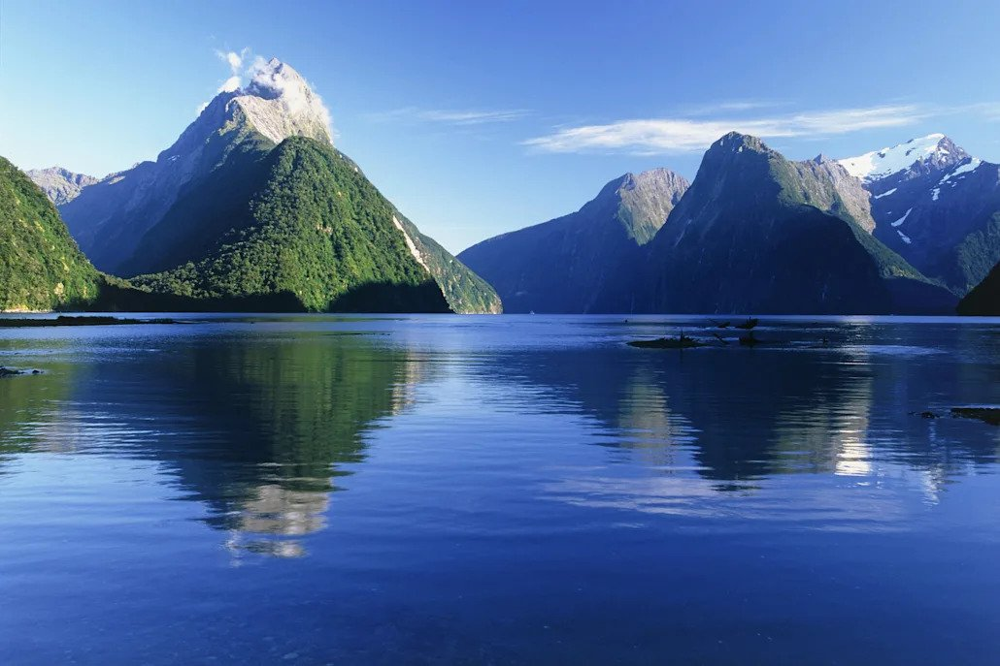
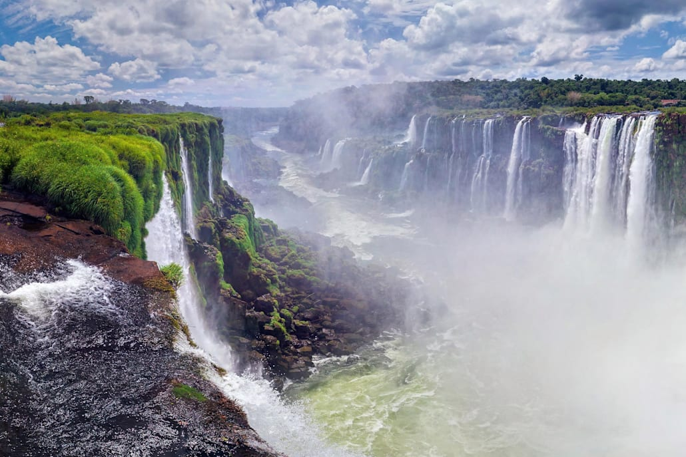
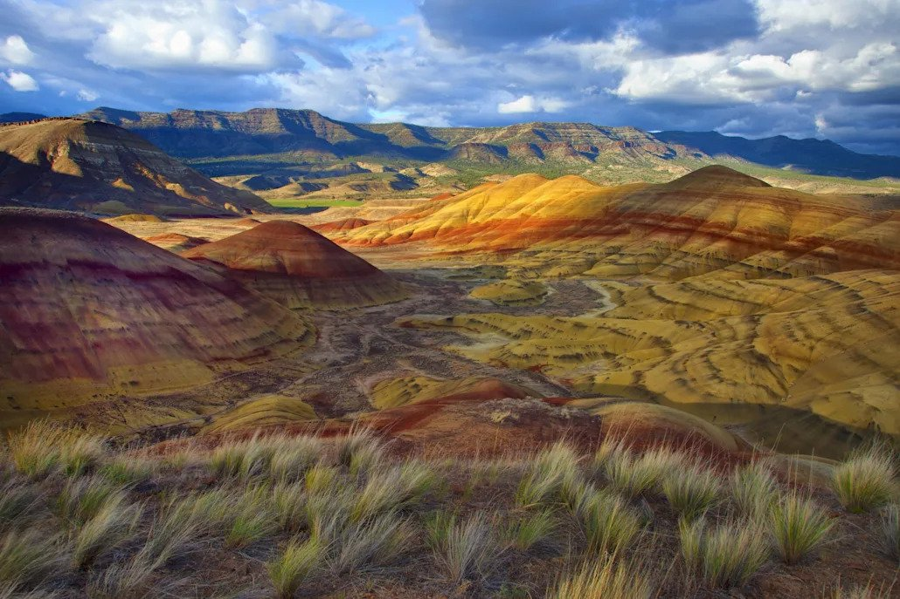
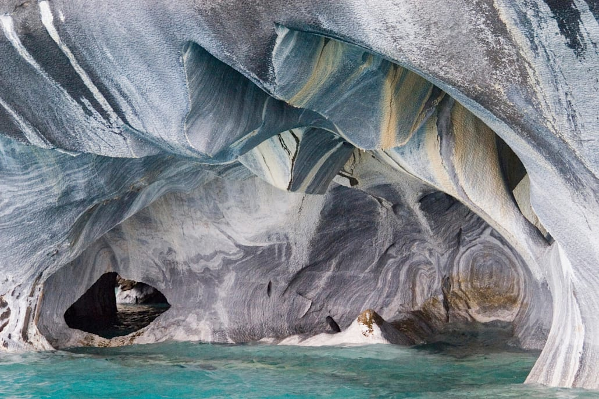

Milford Sound, Nowa ZelandiaNowozelandzka zatoka była wymarzonym miejscem dla twórców filmowej sagi „Władca Pierścieni”. W Milford nakręcono wiele scen hollywoodzkiego hitu. Wodospady Iguazu, Argentyna/BrazyliaNiewiele miejsc na naszej planecie dorównuje klimatem temu niesamowitemu skrawkowi południowoamerykańskiej ziemi. Położone na granicy argentyńsko-brazylijskiej wodospady Iguazu nadają otaczającej je dżungli wręcz mistyczny wymiar. Malowane Wzgórza, Oregon, USARóżnokolorowe wzgórza zachwycają gości parku Painted Hills. To zróżnicowane geologicznie podłoże skalne sprawia, że poszczególne warstwy terenu przybierają odmienne barwy. Zapraszamy do Parku Narodowego John Day Fossil Beds w Oregonie. Jaskinie jeziora General Carrera, ChileW skałach otaczających najgłębsze jezioro Ameryki Południowej fale wyrzeźbiły wspaniałe jaskinie, łuki, kolumny i tunele. Natura potrzebowała na to sześciu tysięcy lat.  |
|---|